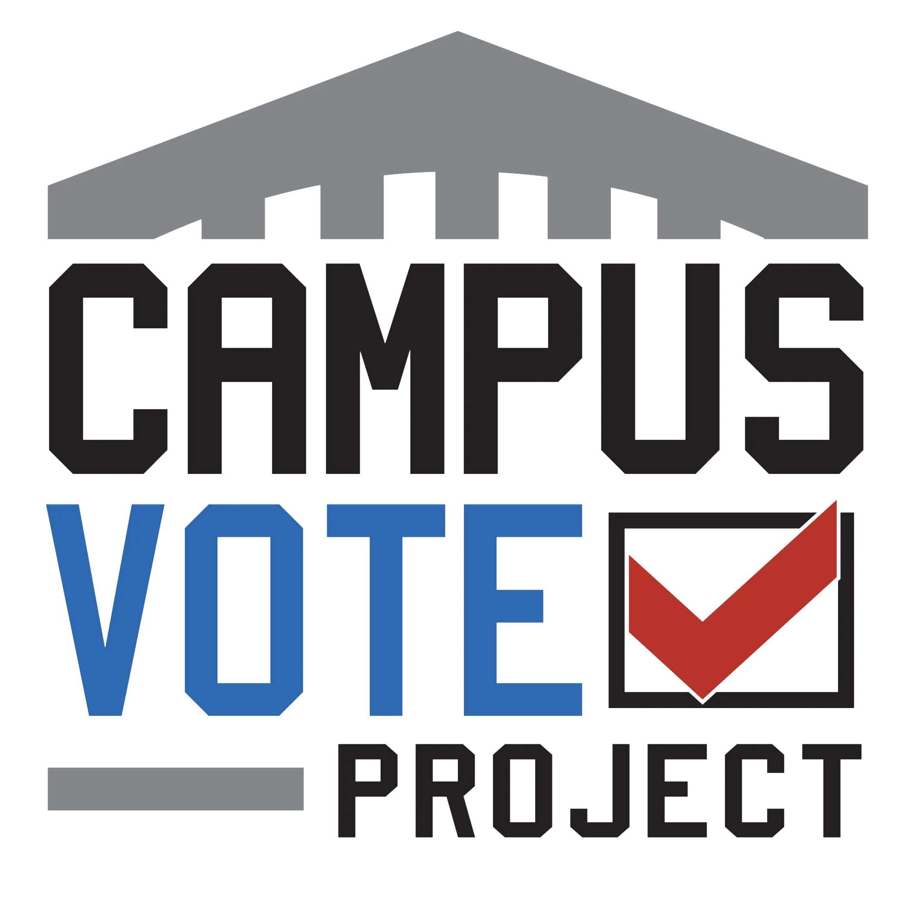

Experience
Now
Peace Corps Education Volunteer
Peace Corps
- Teaching English and life skills to students in grades 3–6, fostering literacy and personal development
- Designing and implementing digital literacy curriculum, classes, and workshops for students and teachers
- Building teacher capacity through workshops, training, and mentorship
- Crafting a community library program to expand access to educational resources for youth
Model United Nations Programming Intern
Cleveland Council on World Affairs

Democracy Fellow — Campus Civic Engagement Advocate
Campus Vote Project
- Promoted nonpartisan voter education, awareness, and engagement activities for the campus community with the goal of increasing voter turnout
PPIA Fellow
Public Policy & International Affairs (PPIA) Fellowship Program
- Fellow at the Ford School of Public Policy, University of Michigan
- Coursework in Microeconomics, Statistics, International Technology Policy, and Public Management
Digital Engagement Assistant
Breadwinners Academy
Education Program Assistant & Community Tutor
Cleveland State University
- Education Program Assistant — Oct 2023 – Mar 2024
- Community Tutor — Sep 2022 – Oct 2023
Founder & Video Creator
YouTube
- Built a content platform with 420,000+ subscribers and 80 million+ views — top 0.2% of creators globally
- Directed a team of 5 collaborators across production, design, and marketing
- Generated $600,000+ in revenue; recognized with YouTube Silver Creator Award presented by CEO Susan Wojcicki
Student Teacher & ESL Tutor
Cleveland Metropolitan School District
- Assistant Teacher — May 2021 – May 2023
- English Second Language Tutor — Nov 2022 – Feb 2023
- Summer School Student Teacher – Special Education — May – Aug 2022